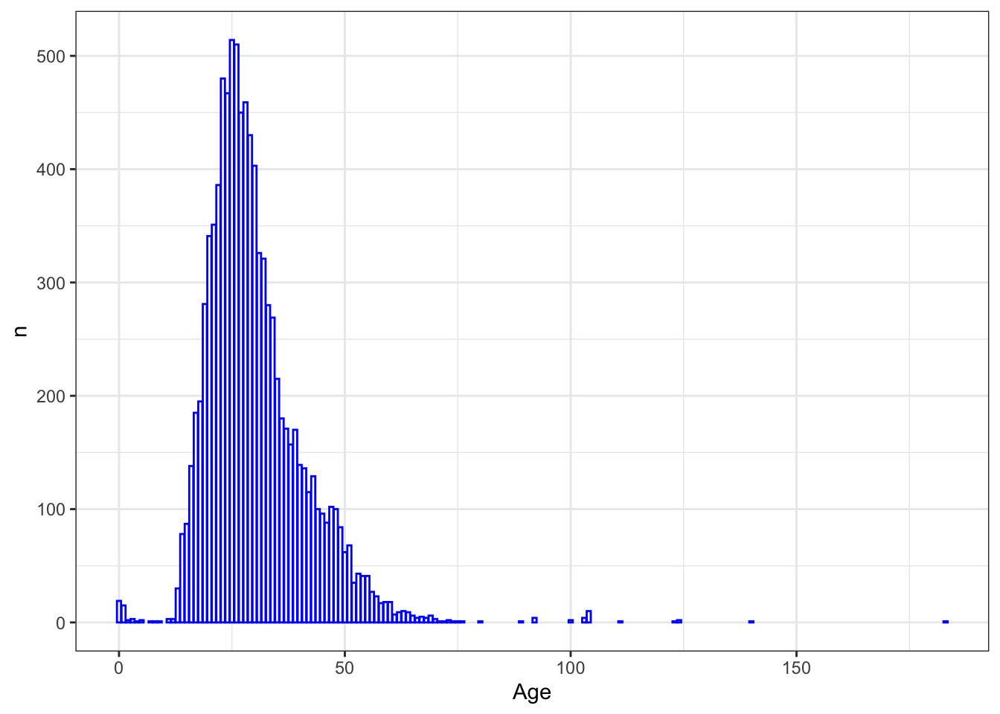

Тема 4 Опрятные данные
Tidy datasets are all alike, but every messy dataset is messy in its own way.
— Hadley Wickham
4.1 Синтаксис tidyverse
Существуют два основных “диалекта” R, один из которых опирается главным образом на функции и структуры данных базового R, а другой пользуется синтаксисом tidyverse (Winter 2020). Tidyverse – это семейство пакетов (метапакет), разработанных Хадли Уикхемом и др., которое включает в себя в том числе пакеты dplyr, ggplot2 и многие другие.
4.1.1 Tibble
Основная структура данных в tidyverse – это tibble, современный вариант датафрейма5. Тиббл, как говорят его разработчики, это ленивые и недовольные датафреймы: они делают меньше и жалуются больше6. Это позволяет решать проблемы на более ранних этапах, что, как правило, приводит к созданию более чистого и выразительного кода.
Основные отличия от обычного датафрейма:
- текст по умолчанию конвертируется в строки, а не в факторы;7
- усовершенствованный метод
print(), не нужно постоянно вызыватьhead(); - нет имен рядов;
- допускает синтаксически “неправильные” имена столбцов;
- при индексировании не меняет тип данных на вектор и др.
load("./data/DiorisisMeta.Rdata")
# распечатывает только первые 10 рядов, для каждого столбца указан тип данных, строки пронумерованы
as_tibble(diorisis_meta)## # A tibble: 784 × 5
## name title date genre subgenre
## <chr> <chr> <dbl> <chr> <chr>
## 1 Achilles Tatius Leucippe and Clitophon 120 Narrative Novel
## 2 Aelian De Natura Animalium 230 Technical Natural History
## 3 Aelian Epistulae Rusticae 230 Letters Letters
## 4 Aelian Varia Historia 200 Essays Miscellanea
## 5 Aeneas Tacticus Poliorcetica -350 Technical Military
## 6 Aeschines Against Ctesiphon -330 Oratory Oratory
## 7 Aeschines Against Timarchus -347 Oratory Oratory
## 8 Aeschines The Speech on the Embassy -336 Oratory Oratory
## 9 Aeschylus Agamemnon -458 Tragedy Tragedy
## 10 Aeschylus Eumenides -458 Tragedy Tragedy
## # ℹ 774 more rows## [1] "Achilles Tatius" "Aelian" "Aelian" "Aelian"
## [5] "Aeneas Tacticus" "Aeschines"## # A tibble: 784 × 1
## name
## <chr>
## 1 Achilles Tatius
## 2 Aelian
## 3 Aelian
## 4 Aelian
## 5 Aeneas Tacticus
## 6 Aeschines
## 7 Aeschines
## 8 Aeschines
## 9 Aeschylus
## 10 Aeschylus
## # ℹ 774 more rows## var.1 two
## 1 1 3
## 2 2 4## # A tibble: 2 × 2
## `var 1` two
## <int> <int>
## 1 1 3
## 2 2 44.1.2 Dplyr
Но самое главное, tibble подходит для “грамматики манипуляции данных”, лежащей в основе dplyr8. Эта грамматика предоставляет последовательный набор глаголов, которые помогают решать наиболее распространенные задачи манипулирования данными:
mutate()добавляет новые переменные, которые являются функциями существующих переменных;select()выбирает переменные на основе их имен;filter()выбирает наблюдения на основе их значений;summarise()обобщает значения;arrange()изменяет порядок следования строк.
Все эти глаголы естественным образом сочетаются с функцией group_by(), которая позволяет выполнять любые операции “по группам”, и с оператором pipe %>% из пакета magrittr.
В итоге получается более лаконичный и читаемый код, что можно показать на примере.
diorisis_meta %>%
select(-subgenre) %>%
filter(genre == "Narrative") %>% # не нужны кавычки!
group_by(name) %>%
count() %>%
arrange(-n)## # A tibble: 20 × 2
## # Groups: name [20]
## name n
## <chr> <int>
## 1 Plutarch 71
## 2 Appian 14
## 3 Flavius Josephus 4
## 4 Xenophon 4
## 5 Arrian 3
## 6 Diodorus Siculus 3
## 7 Philostratus the Athenian 2
## 8 Achilles Tatius 1
## 9 Cassius Dio 1
## 10 Chariton 1
## 11 Diogenes Laertius 1
## 12 Dionysius of Halicarnassus 1
## 13 Eusebius of Caesarea 1
## 14 Herodotus 1
## 15 Longus 1
## 16 Lucian 1
## 17 Polybius 1
## 18 Pseudo Apollodorus 1
## 19 Thucydides 1
## 20 Xenophon of Ephesus 1В базовом R мы бы делали то же самое вот так:
diorisis_df <- as.data.frame(diorisis_meta)
diorisis_select <- diorisis_df[,-5] # remove column
diorisis_filter <- diorisis_select[diorisis_select$genre == "Narrative", ]
diorisis_names <- diorisis_filter$name
diorisis_count <- as.data.frame(table(diorisis_names))
diorisis_sort <- diorisis_count[order(diorisis_count$Freq, decreasing =T),]
head(diorisis_sort)## diorisis_names Freq
## 15 Plutarch 71
## 2 Appian 14
## 10 Flavius Josephus 4
## 19 Xenophon 4
## 3 Arrian 3
## 6 Diodorus Siculus 3Тут должен быть какой-то поучительный вывод.
4.2 Опрятные данные
Но tidyverse – это не только особый синтаксис, но и отдельная идеология “опрятных данных”. “Сырые” данные, с которыми мы работаем, редко бывают опрятны, и перед анализом их следует “почистить” и преобразовать9.
Основные правила опрятных данных:
- отдельный столбец для каждой переменной;
- отдельный ряд для каждого наблюдения;
- у каждого значения отдельная ячейка;
- один датасет – одна таблица.

Посмотрите на учебные тибблы из пакета tidyr и подумайте, какое из этих правил нарушено в каждом случае.
## # A tibble: 12 × 4
## country year type count
## <chr> <dbl> <chr> <dbl>
## 1 Afghanistan 1999 cases 745
## 2 Afghanistan 1999 population 19987071
## 3 Afghanistan 2000 cases 2666
## 4 Afghanistan 2000 population 20595360
## 5 Brazil 1999 cases 37737
## 6 Brazil 1999 population 172006362
## 7 Brazil 2000 cases 80488
## 8 Brazil 2000 population 174504898
## 9 China 1999 cases 212258
## 10 China 1999 population 1272915272
## 11 China 2000 cases 213766
## 12 China 2000 population 1280428583## # A tibble: 6 × 3
## country year rate
## <chr> <dbl> <chr>
## 1 Afghanistan 1999 745/19987071
## 2 Afghanistan 2000 2666/20595360
## 3 Brazil 1999 37737/172006362
## 4 Brazil 2000 80488/174504898
## 5 China 1999 212258/1272915272
## 6 China 2000 213766/1280428583## # A tibble: 3 × 3
## country `1999` `2000`
## <chr> <dbl> <dbl>
## 1 Afghanistan 745 2666
## 2 Brazil 37737 80488
## 3 China 212258 213766## # A tibble: 3 × 3
## country `1999` `2000`
## <chr> <dbl> <dbl>
## 1 Afghanistan 19987071 20595360
## 2 Brazil 172006362 174504898
## 3 China 1272915272 1280428583Важные функции для преобразования данных из пакета tidyr:10
separate()делит один столбец на новые;unite()объединяет столбцы;pivot_longer()удлиняет таблицу;pivot_wider()расширяет таблицу;drop_na()иreplace_na()указывают, что делать с NA и др.
Также упомянем функцию distinct() из dplyr, которая оставляет только уникальные наблюдения и предсталяет собой аналог базовой unique() для таблиц.
Кроме того, в dplyr есть полезное семейство функций _join, позволяющих объединять данные в различных таблицах.11 Дальше мы потренируемся с ними работать.
4.3 Пример: буккроссинг
4.3.1 Смотрим на данные
Загрузим пример неопрятных данных и попробуем их преобразовать для анализа. Book-Crossing – датасет с рейтингами миллионов книг и обезличенными демографическими данными о более 250 тысячах их читателей. Этот датасет хранится в трех разных таблицах.
## # A tibble: 6 × 3
## `User-ID` ISBN `Book-Rating`
## <dbl> <chr> <dbl>
## 1 276725 034545104X 0
## 2 276726 0155061224 5
## 3 276727 0446520802 0
## 4 276729 052165615X 3
## 5 276729 0521795028 6
## 6 276733 2080674722 0## # A tibble: 6 × 3
## `User-ID` Location Age
## <dbl> <chr> <chr>
## 1 1 nyc, new york, usa NULL
## 2 2 stockton, california, usa 18
## 3 3 moscow, yukon territory, russia NULL
## 4 4 porto, v.n.gaia, portugal 17
## 5 5 farnborough, hants, united kingdom NULL
## 6 6 santa monica, california, usa 61## # A tibble: 6 × 8
## ISBN `Book-Title` `Book-Author` `Year-Of-Publication` Publisher `Image-URL-S`
## <chr> <chr> <chr> <dbl> <chr> <chr>
## 1 0195… Classical M… Mark P. O. M… 2002 Oxford U… http://image…
## 2 0002… Clara Callan Richard Bruc… 2001 HarperFl… http://image…
## 3 0060… Decision in… Carlo D'Este 1991 HarperPe… http://image…
## 4 0374… Flu: The St… Gina Bari Ko… 1999 Farrar S… http://image…
## 5 0393… The Mummies… E. J. W. Bar… 1999 W. W. No… http://image…
## 6 0399… The Kitchen… Amy Tan 1991 Putnam P… http://image…
## # ℹ 2 more variables: `Image-URL-M` <chr>, `Image-URL-L` <chr>Что не так с этими данными?
usersсодержит больше одного значения в столбце Location- много отсутствующих значений
- данные вводятся самими пользователями через сайт https://www.bookcrossing.com/ ; они могут содержать недостоверную информацию, см. напр.
moscow, yukon territory, russia(Юкон – это территория Канады). - Age представляет собой строку и др.
- Прежде чем начинать преобразование, надо сформулировать примерный вопрос и понять, что для нас важно, а что нет.
Например: - Сколько читателей старше 30 лет пользуются сервисом в Австралии? - В какие года опубликованы самые популярные книги? - Кто популярнее у читателей, Роулинг или Толкин? - Какой процент пользователей никогда не оставляет отзывы? - Есть ли связь между возрастом и количеством оценок? и т.п.
Чтобы объединить данные, надо понять, через какие переменные они связаны.
Ответ: ratings и books связаны через переменную isbn, ratings и users связаны через переменную User-ID.
4.3.2 Трансформируем данные
Начнем с пользователей.
users_separated <- users %>%
mutate(Age = as.numeric(Age)) %>%
filter(!is.na(Age)) %>% # drop_na(Age) тоже решил бы нашу задачу
separate(Location, into = c(NA, NA, "country"), sep = ",")
head(users_separated) # можно было бы не сохранять, но так нагляднее## # A tibble: 6 × 3
## `User-ID` country Age
## <dbl> <chr> <dbl>
## 1 2 " usa" 18
## 2 4 " portugal" 17
## 3 6 " usa" 61
## 4 10 " spain" 26
## 5 11 " australia" 14
## 6 13 " spain" 26Здесь можно сразу посмотреть, из каких стран и какого возраста пользователи.
## # A tibble: 543 × 2
## # Groups: country [543]
## country n
## <chr> <int>
## 1 " usa" 67138
## 2 " united kingdom" 10935
## 3 " canada" 9877
## 4 " spain" 9505
## 5 " germany" 8016
## 6 " australia" 7824
## 7 <NA> 5914
## 8 " italy" 4754
## 9 " france" 2395
## 10 " portugal" 2175
## # ℹ 533 more rowsПоследние ряды этого тибла выглядят достаточно причудливо:
## # A tibble: 543 × 2
## # Groups: country [543]
## country n
## <chr> <int>
## 1 " pasig city." 1
## 2 " 中国" 1
## 3 " 美国" 1
## 4 " 5057chadwick ct." 1
## 5 " 600 083" 1
## 6 " \\n/a\\\"" 1
## 7 " a new year is ahead" 1
## 8 " aberdeenshire" 1
## 9 " agusan del sur" 1
## 10 " alabama" 1
## # ℹ 533 more rowsЗдесь возможно несколько стратегий. Можно выбрать все ряды с названиями реальных стран либо (если это соответствует исследовательской задаче) какую-то одну страну. Можно и проигнорировать, если происхождение пользователей не так важно.
Допустим, мы решаем сосредоточиться на Испании. Обратите внимание, что в название страны после разделения функцией separate() попали пробелы, и от них надо избавиться. Это делается при помощи регулярных выражений (о них в другой раз) и функции mutate().
spain_data <- users_separated %>%
mutate(country = str_replace_all(country, pattern = "\\s+", "")) %>% # это означает, что пробел мы меняем на "ничто", т.е. убираем
filter(country == "spain") %>%
group_by(Age) %>%
count() %>%
arrange(-n)
head(spain_data)## # A tibble: 6 × 2
## # Groups: Age [6]
## Age n
## <dbl> <int>
## 1 25 514
## 2 26 510
## 3 23 480
## 4 24 467
## 5 28 459
## 6 27 450Столбиковая диаграмма подходит для визуализации подобных данных:
spain_data %>%
ggplot(aes(Age, n)) +
geom_bar(stat = "identity", col = "blue", fill = "white") +
theme_bw()
Какие целеустремленные испанцы! Читают от 0 до 183 лет 😵
После того, как мы убрали лишние пробелы из названий стран, можно фильтровать:
4.3.3 Объединяем данные
Мы уже выяснили, что ratings и users связаны через переменную User-ID, и в ratings хотели бы оставить только те id, которые отвечают заданному условию (страна, возраст и т.п.). Для такого рода объединений как раз подходят функции _join12.
{kind=link}
spain_ratings <- spain_id %>%
left_join(ratings) %>%
filter(!is.na(ISBN)) %>%
filter(`Book-Rating` > 7) %>% # имена синтаксически неправильные, поэтому требуется знак "`"
group_by(ISBN) %>%
count() %>%
arrange(-n)## Joining with `by =
## join_by(`User-ID`)`## # A tibble: 1,281 × 2
## # Groups: ISBN [1,281]
## ISBN n
## <chr> <int>
## 1 8432206407 4
## 2 8433969978 4
## 3 846630679X 4
## 4 8472236552 4
## 5 8495501198 4
## 6 840149186X 3
## 7 8401499585 3
## 8 8423310353 3
## 9 8423662152 3
## 10 8432215007 3
## # ℹ 1,271 more rowsОсталось выяснить, что это за книги. Для этого объединяем spain_ratings и books.
spain_books <- spain_ratings %>%
filter(n > 2) %>%
left_join(books) %>%
filter(!is.na(`Book-Title`), !is.na(`Book-Author`)) %>%
ungroup()
spain_books## # A tibble: 15 × 9
## ISBN n `Book-Title` `Book-Author` `Year-Of-Publication` Publisher
## <chr> <int> <chr> <chr> <dbl> <chr>
## 1 8432206407 4 Sin Noticias … Eduardo Mend… 1995 Planeta …
## 2 8433969978 4 El Libro de L… Paul Auster 2003 Anagrama
## 3 846630679X 4 La caverna = … Jose Saramago 2002 Punto de…
## 4 8472236552 4 UN Viejo Que … Luis Sepulve… 1993 Tusquets…
## 5 8495501198 4 Memorias de u… Arthur Golden 2001 Suma de …
## 6 840149186X 3 El Club de Lo… N. H. Kleinb… 1995 Plaza &a…
## 7 8401499585 3 Los Pilares d… Ken Follett 1995 Plaza &a…
## 8 8423310353 3 El Camino (Co… Miguel Delib… 1991 Continen…
## 9 8432215007 3 El perfume Patrick Susk… 1997 Editoria…
## 10 8445071408 3 El Senor De L… J. R. R. Tol… 2001 Minotauro
## 11 8445071416 3 El Hobbit J. R. R. Tol… 1991 Minotauro
## 12 8477204055 3 El caballero … Robert Fisher 2000 Obelisco
## 13 8478884459 3 Harry Potter … J. K. Rowling 1999 Lectorum…
## 14 8484602508 3 Diario de Un … Antonio Salas 2003 Temas de…
## 15 8495501112 3 Son De Mar Manuel Vicent 2002 Suma de …
## # ℹ 3 more variables: `Image-URL-S` <chr>, `Image-URL-M` <chr>,
## # `Image-URL-L` <chr>Как минимум мы выяснили, что испанцы предпочитают читать по-испански! (Здесь снова можно подумать. Возможно, у одной книги разные ISBN, и стоило группировать не по ISBN, а по названию или автору?)
Осталось избавиться от неинформативных столбцов (это ссылки, часто битые, на изображения обложки). Если мы знаем номера этих столбцов, то это можно сделать по индексу:
## # A tibble: 15 × 3
## title author `Year-Of-Publication`
## <chr> <chr> <dbl>
## 1 Sin Noticias De Gurb (Biblioteca breve) Eduar… 1995
## 2 El Libro de Las Ilusiones Paul … 2003
## 3 La caverna = A caverna Jose … 2002
## 4 UN Viejo Que Leia Novelas De Amor/the Old Men W… Luis … 1993
## 5 Memorias de una geisha Arthu… 2001
## 6 El Club de Los Poetas Muertos N. H.… 1995
## 7 Los Pilares de La Tierra Ken F… 1995
## 8 El Camino (Coleccion Destinolibro) Migue… 1991
## 9 El perfume Patri… 1997
## 10 El Senor De Los Anillos: LA Comunidad Del Anill… J. R.… 2001
## 11 El Hobbit J. R.… 1991
## 12 El caballero de la armadura oxidada Rober… 2000
## 13 Harry Potter y la piedra filosofal J. K.… 1999
## 14 Diario de Un Skin: Un Topo En El Movimiento Neo… Anton… 2003
## 15 Son De Mar Manue… 2002Однако у select() есть функции-помощники13, которые подходят для таких случаев:
starts_with()ends_with()contains()matches()num_range()
spain_books %>%
select(-contains("URL"), -matches("Publisher")) %>% # удалим заодно и издателя
rename(title = `Book-Title`,
author = `Book-Author`,
published = `Year-Of-Publication`) # чиним имена## # A tibble: 15 × 5
## ISBN n title author published
## <chr> <int> <chr> <chr> <dbl>
## 1 8432206407 4 Sin Noticias De Gurb (Biblioteca breve) Eduar… 1995
## 2 8433969978 4 El Libro de Las Ilusiones Paul … 2003
## 3 846630679X 4 La caverna = A caverna Jose … 2002
## 4 8472236552 4 UN Viejo Que Leia Novelas De Amor/the Old … Luis … 1993
## 5 8495501198 4 Memorias de una geisha Arthu… 2001
## 6 840149186X 3 El Club de Los Poetas Muertos N. H.… 1995
## 7 8401499585 3 Los Pilares de La Tierra Ken F… 1995
## 8 8423310353 3 El Camino (Coleccion Destinolibro) Migue… 1991
## 9 8432215007 3 El perfume Patri… 1997
## 10 8445071408 3 El Senor De Los Anillos: LA Comunidad Del … J. R.… 2001
## 11 8445071416 3 El Hobbit J. R.… 1991
## 12 8477204055 3 El caballero de la armadura oxidada Rober… 2000
## 13 8478884459 3 Harry Potter y la piedra filosofal J. K.… 1999
## 14 8484602508 3 Diario de Un Skin: Un Topo En El Movimient… Anton… 2003
## 15 8495501112 3 Son De Mar Manue… 2002Возможно, сюда стоит добавить что-то про работу с факторами. Но не сейчас.
References
Подробнее о том, почему так вообще происходит: https://simplystatistics.org/posts/2015-07-24-stringsasfactors-an-unauthorized-biography/↩︎